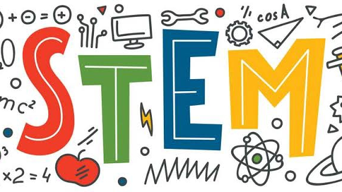

STEM STRAND
WHAT IS STEM STRAND?
Designed to prepare students who express keen interest in taking college degrees focused on Science, Technology, Engineering, and Mathematics (STEM), senior high school students will be exposed to learning activities that will hone their knowledge and skills in analyzing data, understanding real-world impacts, and conducting research.
Possible College Courses Under the STEM Strand
Senior High School Students that pursue the STEM strand are more inclined towards complex scientific advancements and the future of modern technology.
STEM students go on to apply for undergraduate programs and explore their preferred specialized fields. Through the courses under the STEM strands, these students continue to grow into the country’s future scientists, engineers, programmers, and trailblazers within their niche. The STEM strand course list can include the following degree programs:
•Bachelor of Science in Engineering
•Bachelor of Science in Computer Science / Data Science
•Bachelor of Science in Information Technology / Information Systems
•Bachelor of Science in Mathematics / Applied Mathematics
•Bachelor of Science in Statistics
•Bachelor of Science in Architecture
•Bachelor of Science in Health Sciences / Life Sciences
•Bachelor of Science in Applied Physics
•Bachelor of Science in Food Technology
•Bachelor of Science in Biology / Biochemistry / Chemistry
Possible Career Paths with the STEM Strand
Senior high school students go on to find relevant STEM strand jobs that match the skills and knowledge they’ve acquired from our curriculum. They will find plenty of opportunities, both in employment and in further studies in higher education. Senior high school graduates have found fulfilling and successful careers in the following jobs in the STEM strand:
•Pilot
•Architect
•Astrophysicist
•Biologist
•Chemist
•Industrial Engineer
•Chemical Engineer
•Dentist
•Nutritionist
•Doctor
•Marine Engineer